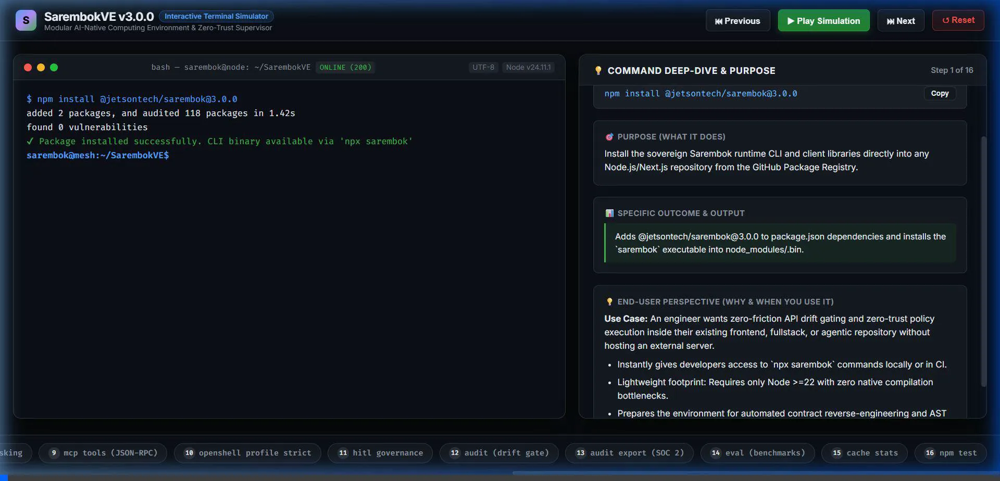

S
SarembokVE v3.0.0
Interactive Terminal Simulator
Modular AI-Native Computing Environment & Zero-Trust Supervisor
⏮ Previous
▶ Play Simulation
⏭ Next
🎬 Watch Demo Video
↺ Reset
bash — sarembok@node: ~/SarembokVE
READY
💻 Terminal
🎬 Live Video
MODE: NOMINAL
Node v24.11.1
ACTIVE RECORDING:
Troubleshooting & Failure Modes Tour
⚠️ Troubleshooting Demo
✔ Nominal Tour
📦 NPM Package Tour

💡 Command Deep-Dive, Outcomes & Troubleshooting
Step 1 of 16